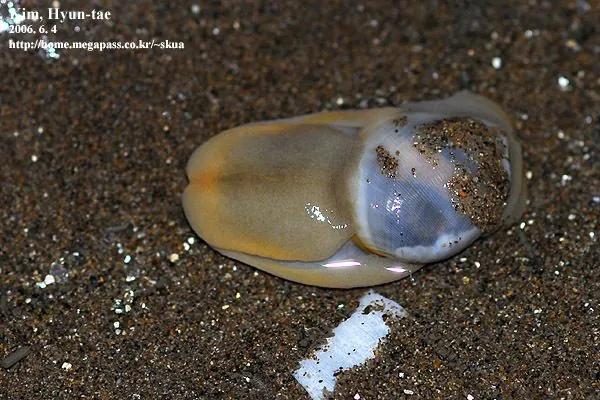

软体动物 · 动物界
泥螺 Bullacta exarata

滩涂上的小型螺类，壳薄而透明，身体几乎包不住，能分泌黏液裹住自己，是江浙沿海常见的腌制小海鲜。
- 分类
- 门软体动物门纲腹足纲目头楯目科阿地螺科属泥螺属
- 栖息环境
- 潮间带中上区的软泥滩涂，喜盐度较低的河口环境
- 地理分布
- 中国沿海、朝鲜半岛和日本，以浙江、江苏、福建河口泥滩最多
- 保护级别
- 尚无保护级别；受滩涂围垦和过度采捕影响
物种志
泥螺的贝壳很小，壳高约一到两厘米，壳薄而脆，呈卵圆形，半透明，黄白色，螺层少，体螺层宽大，壳口宽，口盖退化。它的身体肥大，外套膜和足部不能完全缩进壳内，爬行时身体伸出壳外，靠宽大的足在泥滩上缓慢移动。受惊时它会分泌大量白色黏液，把身体裹成一团，黏液干后形成一层薄膜，可减少水分流失和抵御敌害。
它分布于中国沿海、朝鲜半岛和日本，尤其以浙江、江苏、福建的河口泥滩最多，栖息在潮间带中上区的软泥滩涂，喜欢盐度较低的河口环境。它以底栖硅藻、有机碎屑和微小生物为食，用齿舌刮食泥表。春秋两季繁殖，雌雄同体，异体受精，卵群呈胶质块状附着在泥面上。泥螺是江浙一带的传统小海鲜，多腌制或醉制食用，味道鲜美，但生食有寄生虫风险，需充分加工。目前尚无保护级别，种群受滩涂围垦和过度采捕影响。
形态与习性
- 食性刮食底栖硅藻、有机碎屑和微小生物
- 壳高约一到两厘米，壳薄而半透明
- 防御受惊时分泌大量白色黏液裹住身体
- 栖息环境潮间带中上区软泥滩涂，耐受低盐度
- 繁殖春秋繁殖，雌雄同体，卵群呈胶质块状
- 食用江浙传统小海鲜，多腌制或醉制
趣味知识
- 泥螺的壳小得包不住身体，爬行时一大团软肉露在外面，看上去像没有壳。
- 受惊时它分泌的黏液能把全身裹成一个白团，干后形成保护膜。
- 江浙一带把腌泥螺称作吐铁，是佐粥的常见小菜，但生食需注意寄生虫风险。